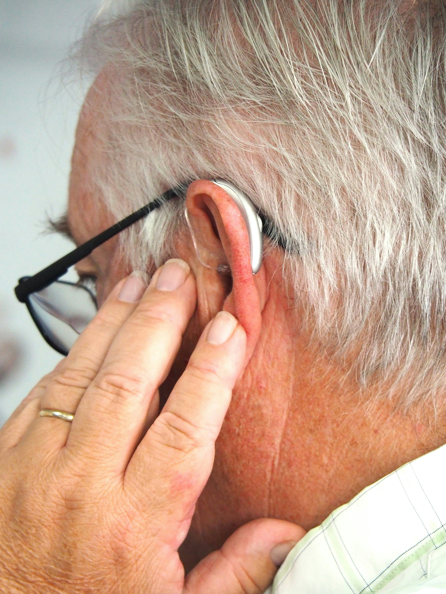

أنواع الإعاقات

الإعاقة الحركية
تشمل الإعاقات التي تؤثر على الحركة والتنقل، مثل:
- الشلل الدماغي
- الضمور العضلي
- إصابات العمود الفقري
- البتر
يمكن التغلب على هذه التحديات من خلال:
- الأجهزة المساعدة الحديثة
- العلاج الطبيعي المستمر
- تهيئة البيئة المحيطة

الإعاقة البصرية
تتراوح من ضعف البصر إلى فقدان البصر الكامل، وتشمل:
- قصر النظر الشديد
- العمى الكلي
- عمى الألوان
- الجلوكوما
التقنيات المساعدة تشمل:
- برامج قراءة الشاشة
- طريقة برايل
- الكتب الصوتية

الإعاقة السمعية
تشمل صعوبات السمع المختلفة، مثل:
- الصمم الكامل
- ضعف السمع الجزئي
- طنين الأذن
وسائل التواصل تشمل:
- لغة الإشارة
- قراءة الشفاه
- المعينات السمعية الحديثة